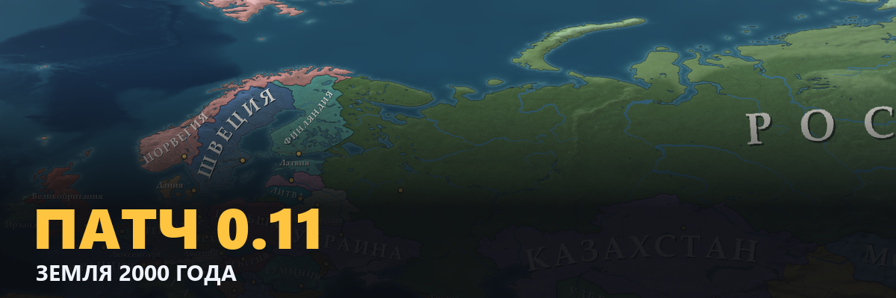
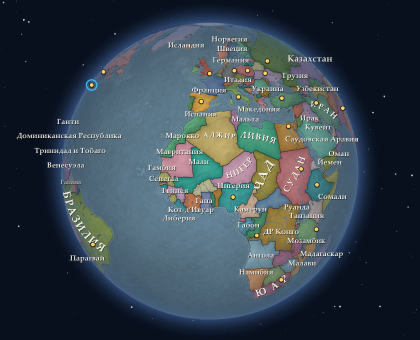
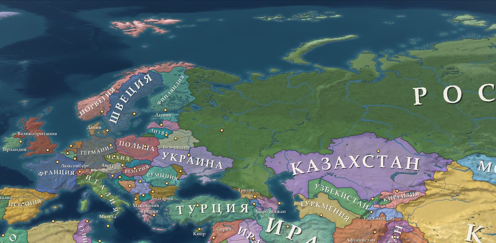
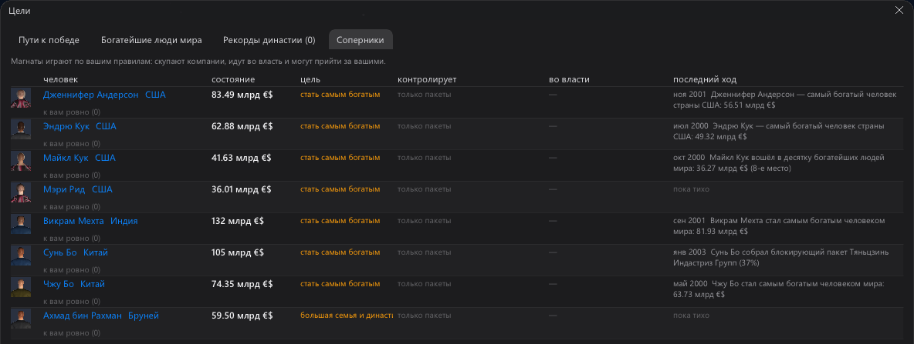
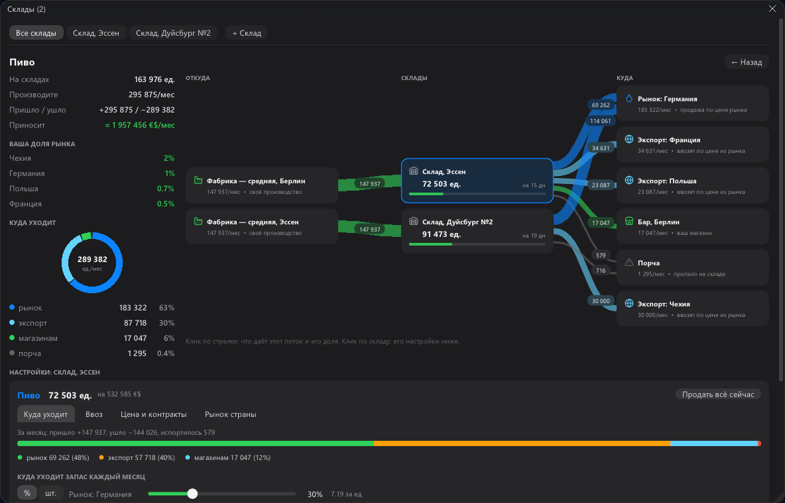
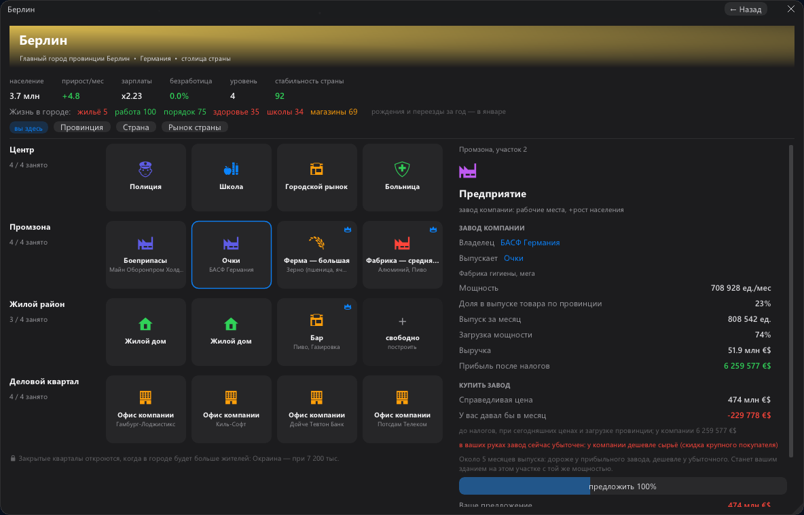

Самый частый отзыв на бету 0.10: «если бы игра была на реальной карте мира — купил бы». Мы повернули весь проект.
Обновление 0.11 уже можно скачать.
- ✚ Земля 2000 года вместо выдуманного мира
- ✚ Магнаты — 300 богатейших людей мира играют по вашим правилам
- ✚ Карта-атлас, которая сворачивается в глобус
- ✚ Склад со схемой потоков товара
- ✚ Новый интерфейс и словарь по наведению
- ✚ Настоящие страны, области и города; население и экономика на 1 января 2000 года
- ▲ Живых стран: 17 → 150+ — вся Европа, обе Америки, Азия, Африка, Океания
- ✚ Реальный масштаб: люди и рынки как в 2000 году, ваш первый завод — капля в океане
- ✚ Бедные спокойные страны догоняют богатых: Китай и Индия за 25 лет вдвое богаче; страна в войне или смуте стоит на месте
- ✚ Блоки и союзы: ЕС, НАТО, СНГ, АСЕАН, МЕРКОСУР, ОДКБ, ССАГПЗ
- ✚ Расстояния и дни в пути — по земному шару; в южном полушарии сезоны сдвинуты на полгода
- ✚ Город отдельно от округи: «город 1,1 млн, с округой 7,3 млн»

- ✚ Атлас в духе Victoria 3: приглушённые цвета стран, рельеф сквозь заливку, вода по глубине, рощи
- ✚ Издали — старая бумажная карта, при отдалении — глобус
- ✚ Названия стран идут дугой по форме страны; маленькие страны — тем же стилем
- ▼ Скачки букв в названиях при движении камеры: 6–13 → 0
- ✖ Края у карты больше нет: Тихий океан проходит насквозь
- ▲ Проекция по зуму: издали — честные пропорции стран, вблизи — формы без растяжки
- ▲ Кадр карты вблизи: 23 → 7 мс

- ✚ 300 богатейших людей мира скупают доли, собирают блокирующие пакеты, берут компании под контроль и сливают соперников
- ✚ Идут во власть вашим путём: сфера влияния, взносы, губернатор, министр, преемник
- ✚ Перебивают ваши оферты (берут кредит под залог пакета) и стоят за рейдерами вашей корпорации
- ✚ Строят заводы против ваших товаров, когда у вас заметная доля рынка
- ▲ Слияний компаний за 20 лет: 0 → 6–14
- ▲ Монополистов со своей компанией: 1–2 → 7–13
- ✚ Вкладка «Соперники» в окне «Цели»: кто вам мешает и что сделал последним

- ▼ Богатейший человек мира через 20 лет: 5–7 трлн → ~0,5 трлн
- ▼ 100-й богатейший через 20 лет: 45 → 31 млрд
- ▼ Стран, где богатейший владеет больше 30% годового выпуска страны: 16–17 → 2
- ⟳ Глобальная фирма продаёт за границей не больше 8 своих домашних рынков — Ботсвана больше не растит триллионеров
- ⟳ Компании платят накладные: половина прибыли их заводов
- ⟳ Основатели гигантов держат около 10%, стартапы продают 40% на IPO, крупные семьи понемногу продают доли
- ⟳ Люди мира платят 13% с дивидендов и тратят часть богатства
- ⟳ Компания поглощает только тот бизнес, который умеет вести
- ✚ Экспорт сразу в несколько стран
- ✚ Любой товар открывается схемой потоков: откуда → склады → куда; толщина стрелки — единицы
- ✚ Рынок и каждая страна экспорта — в % или в штуках в месяц
- ✚ Выпуск одного завода делится между складами (например 60/40)
- ✚ Цепочка производства с ценой каждого шага и «пришло / ушло / прибыль»
- ✚ Быстрые действия: убавить товар, усилить производство, пополнить продажи

- ✚ Соперники вашего размера: люди открывают свои магазины и растут — «Петров» → «Петров и сыновья» → «Петров-Маркет»
- ✚ Любую часть бизнеса — магазины, заводы, СМИ, склады — можно выделить в дочернюю компанию с директором из трёх кандидатов
- ⟳ Торговые сети зарабатывают от своих магазинов в городах, а не от рынка всей страны
- ⟳ Названия компаний — по реальным странам
- ✚ Тёмное стекло, иконки, сводные карточки — главное видно с одного взгляда; таблицы остались для точной настройки
- ✚ Словарь по наведению: наведите на слово или число — игра объяснит, что это
- ⟳ Все окна по одним правилам: карточки, отступы, четыре размера шрифта, ползунки как в iOS
- ⟳ Первый час понятнее: подписи у денег, «—» вместо нулей первого месяца, честный итог главы обучения

- ✖ Каждая новая игра создавала один и тот же мир
- ✖ Банк, поглощавший банки других стран, раздувался до 7,8 трлн
- ✖ Новая торговая сеть с одним магазином получала миллиарды
- ✖ Дочка из трёх магазинов получала 200 млн маржи с биржи заявок
- ✖ Падение игры после семейного месяца
- ✖ Разрыв глобуса у полюса и полоса над Тихим океаном
- ✖ Тёмные пятна-кратеры на озёрах Тибета
- ⚠ Сохранения беты 0.10 сделаны в выдуманном мире и в 0.11 не загружаются — игра скажет об этом прямо
- ✔ Сохранения 0.11 будут грузиться и в следующих версиях
Пишите в комментариях, что думаете. Нашли ошибку — «Игра → Сообщить об ошибке» соберёт сохранение и журнал в один архив.